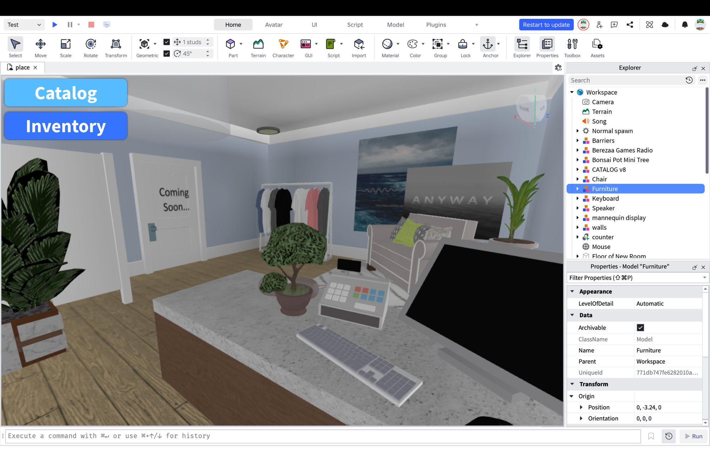
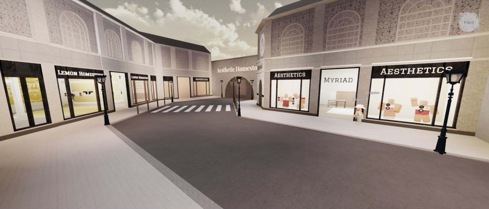
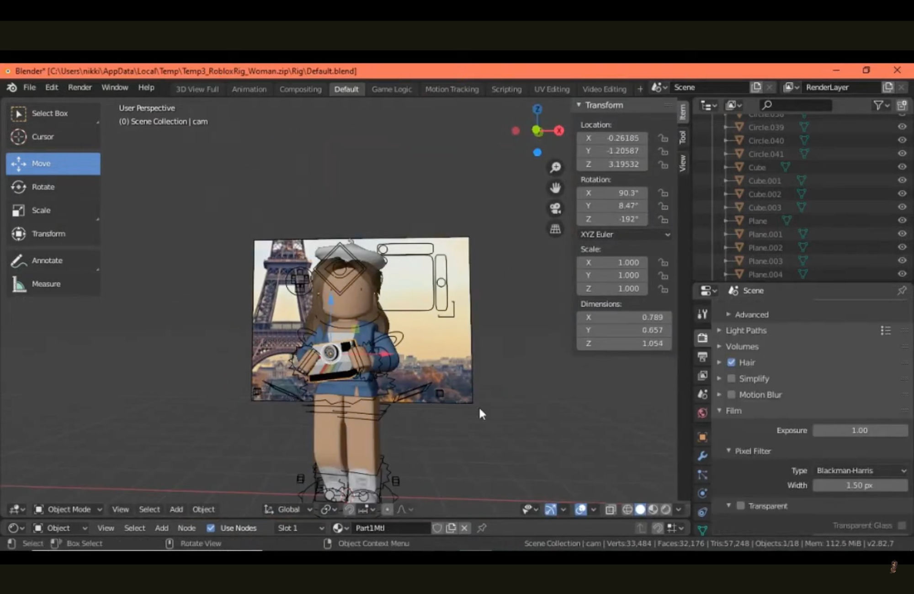
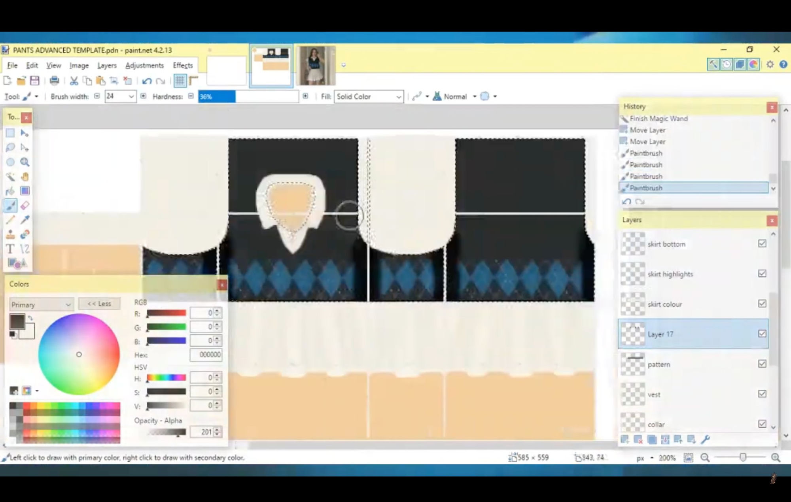
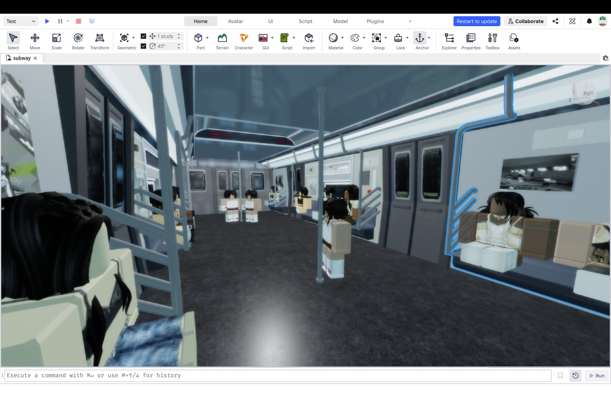
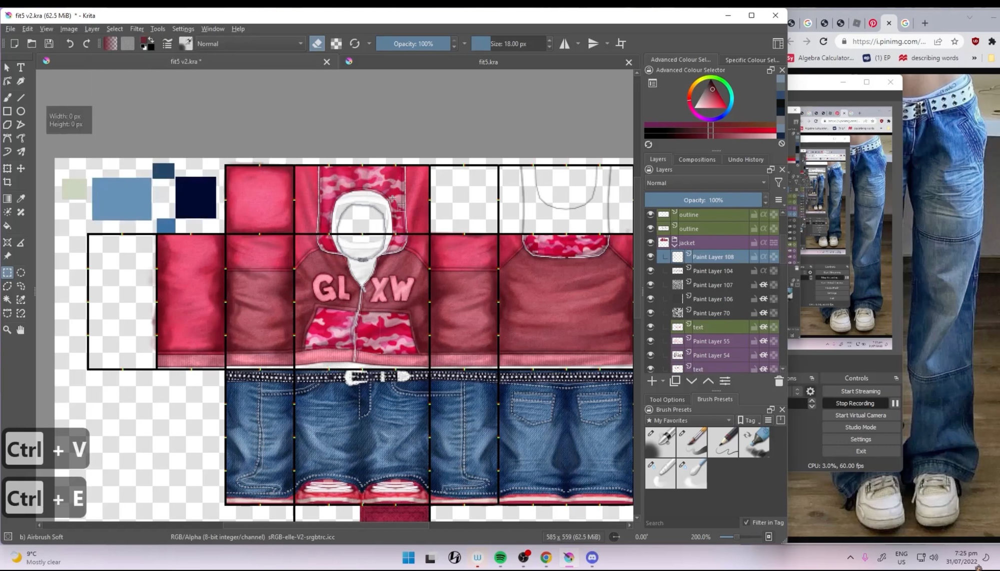
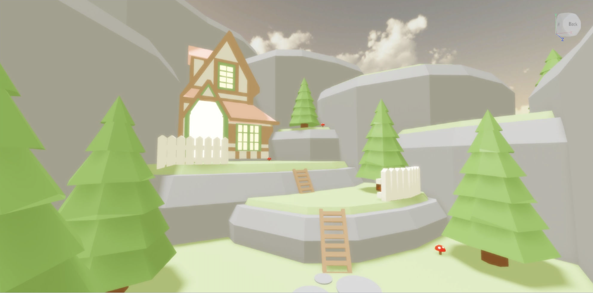

Mechatronics student curious about where technical thinking meets people and product.
I'm a second-year Mechatronics Engineering student at the University of Canterbury, interested in the space where engineering meets people, systems, and real-world problem solving.
Alongside my degree, I enjoy putting myself in environments where people are building, solving problems, and exploring ideas — from engineering communities to innovation and entrepreneurship spaces.
Currently seeking internship opportunities across engineering, product, and technical-commercial environments.
Three weeks spent in a research lab at the University of San Carlos, working on kappa carrageenan as a material for 3D-printed tissue scaffolds. Observed rheometry, bioprinting, and cell culture.
Full motion control system for a physical elevator rig — floor scheduling, encoder-based positioning, and door interlock logic, all under safety supervision. Built in a team of two for ENMT211.
Regular at InHive, Ice House Ventures, NZ Young Entrepreneurs, and founder panels — building exposure to how ventures are started, what fails early, and what gets traction.
Two weeks embedded in a biomedical research lab investigating kappa carrageenan — a seaweed extract the Philippines exports at scale — as a material for 3D-printed tissue scaffolds. I observed and assisted with rheometer experiments to characterise gel properties at varying concentrations, watched scaffold fabrication on a bioprinter, and helped prep cell cultures for confocal microscopy. Got exposure to how real research runs: iterative, collaborative, and messier than the textbook version.
Working in an aged care environment since age 15, supporting day-to-day operations while gaining an understanding of how teams, systems, and care environments function. More recently, I've become interested in improving small workflow inefficiencies using existing digital tools.
Between 11 and 16, I built and ran a full creative and commercial operation inside Roblox — 3D environments, clothing design, multi-client advertising, commission management. I didn't know what any of it was called. I let my curiosity lead me.
Started building 3D environments in Roblox Studio. Coded very basic Lua scripts to make things actually work, learned to make the most out of what already existed.

The outcomes of lockdown. Continued to learn, iterate, and test. Built a Paris-themed shopping district with multiple storefronts and interior environments in Roblox Studio. Started designing 2D clothing in Paint.NET — first attempts, figuring out layers, shading, templates. Also started teaching myself Blender for small personal projects: basic models, simple GFX, just exploring what the tool could do.
The clothing work continued through age 14. The improvement was visible.



The clothing work had levelled up enough to get hired. GLXW brought me on as a weekly designer — fixed rate per piece, paid by output. I was also taking ad commissions on the side: designing advertising banners for other groups, each with a different aesthetic and brief.
Built a commission queue system so clients could see their position, status, and updates all in one place. Not because the process was broken — I just thought that was the right way to treat people waiting on work.
I took advantage of my high school's Adobe suite and documented the whole design process on YouTube. I learned how to use Photoshop, Illustrator, and Premiere Pro. I posted speed recordings of clothing from start to finish and amassed thousands of views. Comments still come in, most recent was three months ago.
Running it all simultaneously with school and two part-time jobs at one point. Continued to build on Roblox Studio from time to time.



Before I knew what any of this was called, I was doing it.
Somewhere along the way, I stopped thinking about all of this as “experience.”
High school happened. Engineering happened. Life got busier. What used to take up most of my free time slowly became something I rarely thought about.
But looking back, I think those years shaped me far more than I realised.
Without really knowing it, I had spent years learning how to build things from scratch, figure out unfamiliar tools, work with constraints, communicate with people, and solve problems independently. I learned how to iterate, take feedback, manage expectations, and care deeply about details — whether that meant improving a clothing design, building a more believable environment, or making sure someone waiting on commissioned work felt looked after.
The funny thing is: those same patterns still show up everywhere in my life.
Today, I study Mechatronics Engineering at the University of Canterbury, where I’m naturally drawn to systems thinking, problem solving, and understanding how things work. Outside the degree, I keep finding myself pulled toward spaces where technical ideas meet people — engineering communities, startups, innovation events, student clubs, and collaborative projects.
Looking back, I think that early creative world shaped how I approach problems today. I’m naturally curious. I like figuring things out from first principles. I enjoy bringing structure to messy systems and thinking about how ideas actually work in practice. Just as much, I care about communication — making things understandable, useful, and meaningful to the people on the other side.
At the time, I thought I was just making things online.
Now, I think I was accidentally learning how I like to think.
Helping coordinate events, initiatives, and operations that support student engagement within the biomedical engineering community.
Supporting student engagement, events, and community-building within the Mechatronics Engineering cohort.